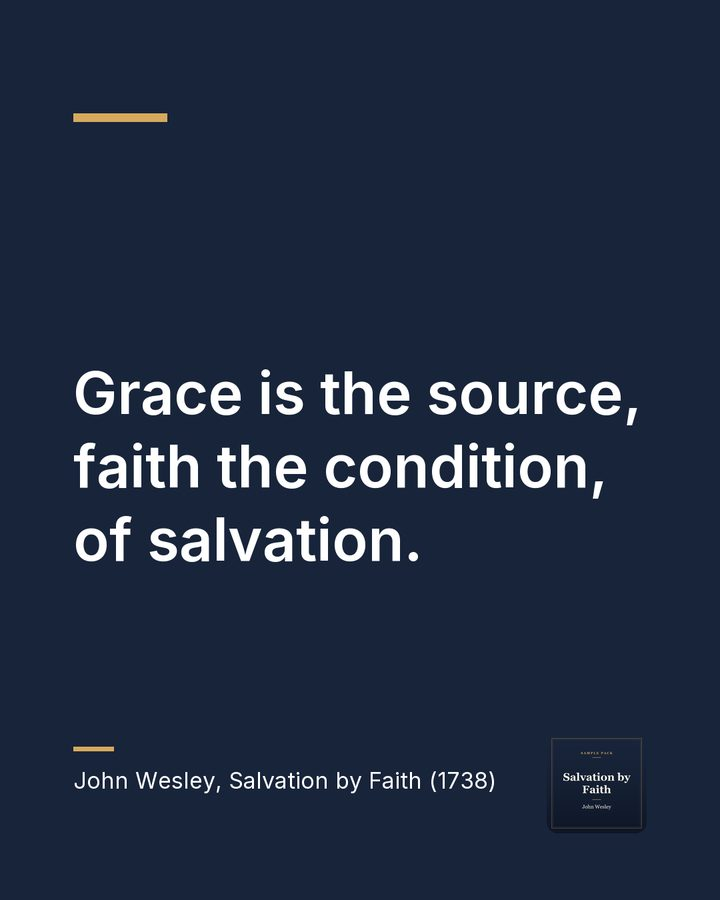
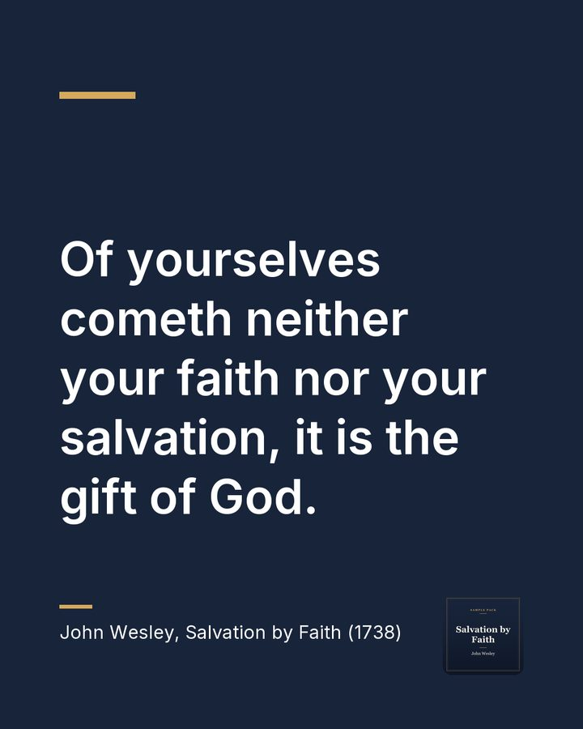
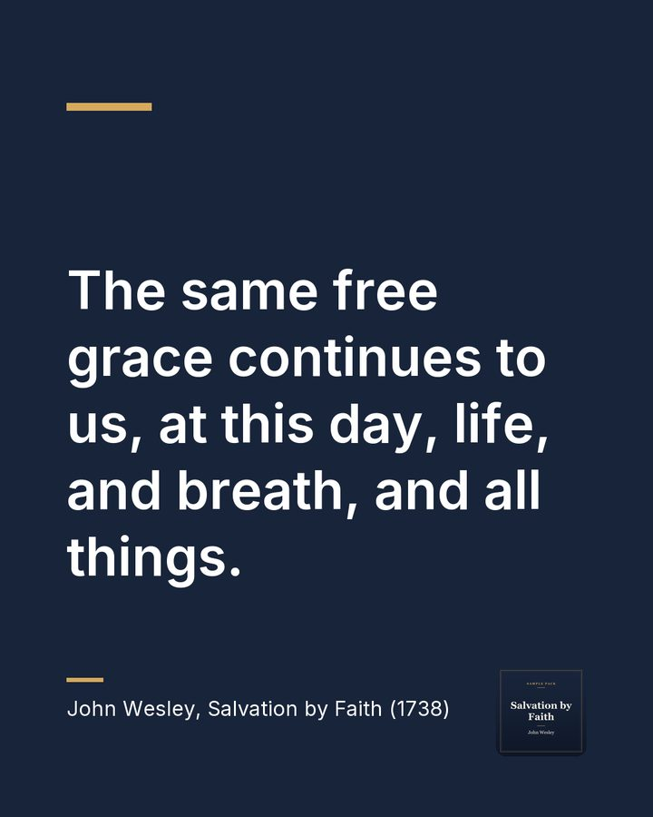

Every pack starts with three clips like this one.
Every blessing we have is free grace
Sunday Pack, $79 a month
Every Monday: 3 captioned clips, 3 quote cards, a 150 word summary, a 5 question small-group guide and a caption for every clip.
Your first four Sundays are free, and we don't ask for a card.
After that it's $79 a month, or $790 a year, by card or by invoice. Cancel anytime.
Request the Sunday Pack, $79 a monthThis is a sample, so the button opens our request form with the Sunday Pack chosen.
Suggested caption:
Everything good in your life, from breath to salvation, is a gift you could never earn. Rest in that today. #grace #faith
Audio: Salvation by Faith by John Wesley (1703-1791), read by a LibriVox volunteer, public domain. Cut and captioned by Already Made. LibriVox and its volunteers do not endorse this studio.
Two more from the same message
Each pack has three clips, chosen so each one stands on its own.
Saved from guilt, and saved from fear
Preview. The full clip comes with your pack.
Suggested caption: Faith in Christ does not only forgive. It frees us from the fear of punishment and lets us call God Father. Live in that peace this week. #grace #peace
Even our faith is a gift from God
Preview. The full clip comes with your pack.
Suggested caption: You did not make yourself believe, and you cannot earn your way in. Faith and salvation are both God's free gift, so there is nothing to boast about. #grace #gift
Before this page was made, every clip passed our checks: its captions match our transcript of the recording word for word, the captions keep time with the speech, and the sound is set to an even level. Each quote graphic was checked word for word against the same transcript. We never post anything. Your team approves each piece and posts it.
Summary
Preaching on Ephesians 2:8, John Wesley argues that every blessing, including salvation and even faith itself, is the free, undeserved gift of God. No human works can atone for sin. He then asks what kind of faith saves. It is not the bare belief of a heathen, nor the intellectual belief of a devil, nor even the early faith of the apostles before the cross. It is a trusting reliance of the heart on the death and resurrection of Christ. This faith brings a present salvation from the guilt and power of sin, and from fear, and it leads to a new birth and holy living. He answers objections: that it opposes good works, breeds pride, encourages sin, or drives men to despair. He closes by saying the doctrine should be preached to all, and calls believers to go forward in Christ's victory.
For small groups
The 5 discussion questions that come with this message:
- What does it mean to you that even faith is a gift of God?
- Why is knowing true facts about Jesus not the same as saving faith?
- How does the idea of grace change the way you think about earning God's approval?
- How can we trust fully in Christ and still pursue holiness and good works?
- Who in your life needs to hear that mercy is offered to everyone?
Three quote cards



What arrives every Monday
- 3 vertical clips with captions, ready for Reels, Shorts and TikTok
- 3 quote cards for Instagram and Facebook
- A 150 word summary for the bulletin, newsletter or website
- A 5 question discussion guide for small groups
- A ready-to-paste caption for every clip
How we get the sermon each week
Every Monday we take the newest message from your public podcast feed, or from the video link you share, and send the pack to your inbox.
About this sample
This sample was made from a public domain recording. It is not a client's sermon.